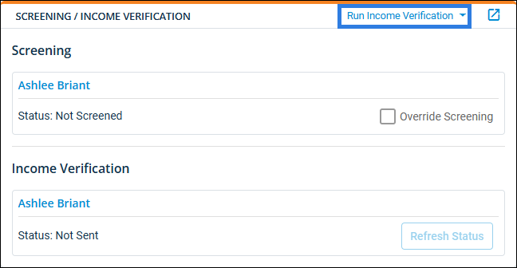

Screening Products Credentials (System Preferences)
Rent Manager has partnered with AmRent to provide the ability to check a prospect or tenant’s credit history, criminal record, evictions, and verify their claimed income, from within Rent Manager. Before you can utilize these features, you need to enable AmRent products in Rent Manager and enter your credentials for screening and/or income verification services.
More Information
If you have properties with their own unique AmRent username and password, you must add those credentials directly to each property in the property's screening settings and check the option to override the credentials set in system preferences. For more information, refer to Property Screening Settings (Pop-Up).
Related Privileges
| Group | Privilege | Column |
|---|---|---|
| System | System Preferences | View, Edit |
For more information, refer to Control User Access.
To set these system preferences, do the following:
-
Go to
 arrow_forward
arrow_forward  Administration, then go to .
Administration, then go to . -
Check Use AmRent Screening Products.
-
In the AmRent Username field, enter the account login provided by AmRent.
-
Edit the settings as desired. Each setting is described below.
-
Click Save to accept your changes.
Preference Descriptions
This preference group is divided into multiple sections. Each setting is described within the corresponding section below.
Screening
In the Screening section, enter your AmRent Screenings Password as provided by AmRent, then click Test Connection to verify your credentials. This is used only for AmRent screening services.
Income Verification
In the Income Verification section, enter your ClientID and Secret Key as provided by AmRent, then click Test Connection to verify your credentials. These are used only for AmRent income verification services.
Default Screening Type
In the Default Screening Type section, select the AmRent service you use more often: Screening or Income Verification. This option determines the button that displays on the Screening/Income Verification tile for prospects and/or tenants (e.g., Run Income Verification).
